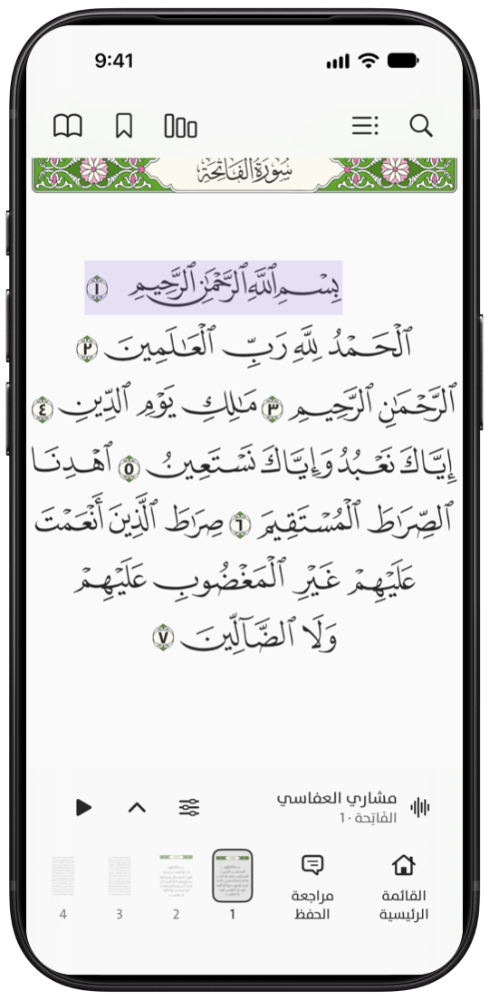
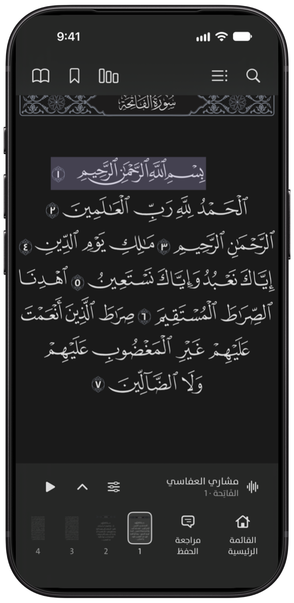

Khatmah and night prayer
Set a date to complete the Quran and bookmark the ayah you reach. Prepare the surahs you want to read in night prayer.
Choose the Mushaf you read from and come back to the place you left off.



Open the Mushaf to the last page you read. To listen, search by reciter or surah and download a recitation for offline playback.

On iPad, choose your Mushaf and how to display it. Open tafsir or a translation of an ayah’s meaning as you read.
See how the Mushaf appears on the inner display of iPhone Duo.

Set a date to complete the Quran and bookmark the ayah you reach. Prepare the surahs you want to read in night prayer.
Start reciting from a place you know in the Mushaf and ask for a hint when you need one.
Read your morning, evening and bedtime adhkar. See the next prayer time and find the Qibla.